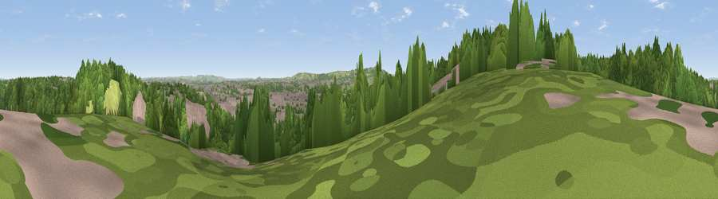

Viewpoint near Leigh Woods
#28263 in England · top 53% of its area beats it · near Leigh WoodsWhere it is
The exact computed spot (ST 56175 72975). Click the marker for map links.
The view, rendered

A 360° render of this exact spot computed from the terrain model, tree cover and land cover — summer colours, afternoon light, calibrated against photographs of famous viewpoints. Real trees, hedges and buildings will differ in detail.
The panorama
Grey silhouette: terrain skyline in each direction (720 bearings, Earth curvature and refraction included). Dashed green: skyline with trees (+15 m) and buildings (+8 m) as obstacles. Blue strip: how far the ground is visible on each bearing.
Where the view opens
Wedge length = distance to the farthest visible ground on that bearing (vegetation-aware). Rings at 10, 25 and 50 km.
What fills the view
66% woodland · 19% built-up · 12% grassland · 2% water ·
Angular shares of the visible panorama (visual magnitude), not map area. Landscape diversity 0.43 (0–1 Shannon).
Key numbers
More beautiful places nearby
The staircase of upgrades: each row has a higher view potential than everything closer. Driving times are estimates from straight-line distance, calibrated against real road routing — check an actual route before setting out.
| Place | Direction | Drive | Score |
|---|---|---|---|
| Viewpoint near Hallen | NNW · 5 km | ~11 min | 66.7 |
| Dundry Hill | S · 6 km | ~13 min | 72.4 |
| Viewpoint near Norton Malreward | SSE · 7 km | ~15 min | 72.9 |
| Viewpoint near North Stoke | ESE · 15 km | ~27 min | 75.4 |
| Hanging Hill | E · 15 km | ~27 min | 76.4 |
| Beacon Batch | SSW · 17 km | ~30 min | 79.4 |
| Bleadon Hill [Loxton Hill] | SW · 25 km | ~41 min | 79.6 |
| Viewpoint near Stinchcombe | NE · 31 km | ~48 min | 80.5 |
51.45405, -2.63211 · source: screening · position refined by local search. Computed location — check access rights before visiting.